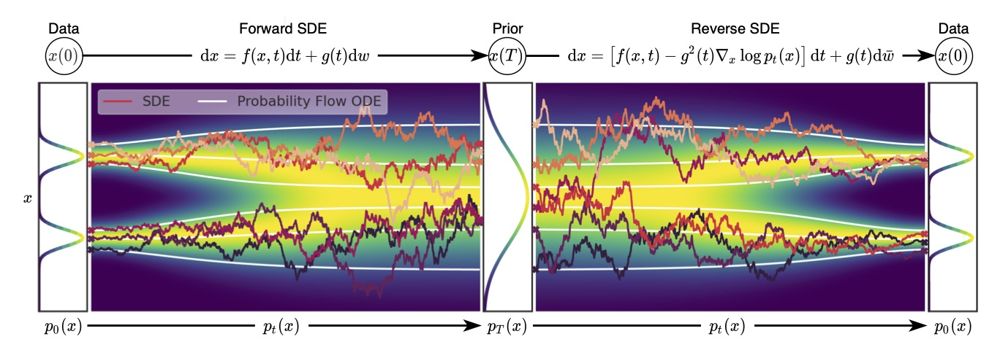
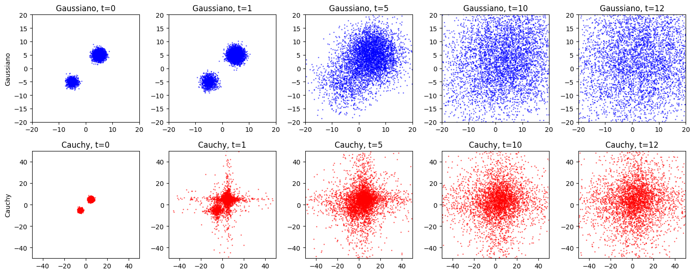

1 / 17
Chapter 2
Score‑Based Modeling via Stochastic Differential Equations
From discrete noise scales to continuous diffusion processes:
forward and reverse SDEs, continuous‑time score matching, and the
inevitability of Gaussian noise.

Continuous‑time diffusion framework.
From Discrete Noise Scales to Continuous Time
The NCSN is trained on a finite sequence $\{\sigma_i\}_{i=1}^L$,
approximating the scores of $L$ perturbed distributions. A natural question
arises: what happens as $L\to\infty$?
Discrete step
At each noise level $\sigma_i$, the corruption is
$$
\mathbf{X}_{i+1} = \mathbf{X}_i + \sigma_i\,\boldsymbol{\epsilon}_i,
\qquad \boldsymbol{\epsilon}_i \sim p_{\mathbf{z}}.
$$
Identifying $\sigma_i \equiv g(t_i)\sqrt{\Delta t}$ with step size
$\Delta t = T/L$, the increment has variance $\propto\Delta t$ — the
hallmark of a stochastic process increment.
Continuous limit $L\to\infty$
As $\Delta t\to 0$, the discrete sequence $\{\sigma_i\}$ becomes a
continuous-time index $t\in[0,T]$ and the perturbed distributions
$\{q_{\sigma_i}\}_{i=1}^L$ become a continuous family
$\{p_t\}_{t\in[0,T]}$, where
$$
p_0 = p_{\mathrm{data}},
\qquad
p_T \approx p_{\mathrm{prior}}.
$$
The perturbation process $\{\mathbf{X}_t\}_{t\in[0,T]}$ is a
continuous-time stochastic process driven by increments of
$\boldsymbol{\epsilon}$.
The type of limiting process depends on the law of the noise
$\boldsymbol{\epsilon}$. For arbitrary additive noise
with stationary independent increments, the limit is a
Lévy process, a broad class that includes
jump processes and heavy-tailed distributions. For the remainder of this
work we adopt the Gaussian hypothesis
$\boldsymbol{\epsilon}\sim\mathcal{N}(\mathbf{0},I_d)$, under which the
Lévy process reduces to a standard Wiener process and the perturbation
is governed by an Itô SDE.
Stochastic Differential Equations as Continuous Perturbations
General Itô SDE (Forward Process)
$$
d\mathbf{X}_t
=
\mathbf{f}(\mathbf{X}_t,\,t)\,dt
+
G(\mathbf{X}_t,\,t)\,d\mathbf{W}_t,
\qquad
\mathbf{X}_0 \sim p_{\mathrm{data}},
$$
where $\mathbf{f}:\mathbb{R}^d\times[0,T]\to\mathbb{R}^d$ is the
drift coefficient, $G:\mathbb{R}^d\times[0,T]\to\mathbb{R}^{d\times d}$
is the diffusion coefficient, and
$\{\mathbf{W}_t\}_{t\ge0}$ is a standard $d$-dimensional Wiener process
on the filtered probability space
$(\Omega,\mathcal{F},\{\mathcal{F}_t\}_{0\le t\le T},\mathbb{P})$.
The infinitesimal increment $d\mathbf{W}_t$ is informally interpreted as
white noise. For the SDE to be well-posed, the coefficients $\mathbf{f}$
and $G$ must satisfy regularity conditions: global Lipschitz continuity in
both state and time guarantees a unique strong solution
(Oksendal 2003).
The solution is a continuous family of random variables
$\{\mathbf{X}_t\}_{t\in[0,T]}$. For each fixed $t$, the
marginal density $p_t(\mathbf{x})$ of $\mathbf{X}_t$
evolves according to the Fokker–Planck equation. By construction,
$$
p_0(\mathbf{x}) = p_{\mathrm{data}}(\mathbf{x}),
\qquad
p_T(\mathbf{x}) \approx p_{\mathrm{prior}}(\mathbf{x}),
$$
where $p_{\mathrm{prior}}$ is a simple tractable distribution, typically
$\mathcal{N}(\mathbf{0},I_d)$, that retains no information about the
original data. This continuous-time framework generalizes the discrete NCSN
formulation: $\{q_{\sigma_i}\}_{i=1}^L \to \{p_t\}_{t\in[0,T]}$ and
$\nabla_{\mathbf{x}}\log q_{\sigma_i} \to \nabla_{\mathbf{x}}\log p_t(\mathbf{x})$.
Embedding the Experiment into the SDE Framework
In the experiment, $\sigma$ was sampled uniformly from
$[\sigma_{\min},\sigma_{\max}]=[0.001,4.0]$, implicitly defining a
continuous family of perturbed distributions
$\{p_\sigma\}_{\sigma\in[\sigma_{\min},\sigma_{\max}]}$, where $p_\sigma$
is the law of $\mathbf{x}+\sigma\boldsymbol{\epsilon}$,
$\boldsymbol{\epsilon}\sim\mathcal{N}(\mathbf{0},I)$.
Identification $t=\sigma$
Set $t=\sigma$ and work on $t\in[0,T]$ with $T=\sigma_{\max}$.
We require the marginal at time $t$ to be exactly the law of
$\mathbf{x}_0+t\boldsymbol{\epsilon}$, i.e.
$$
p_{0t}(\mathbf{x}(t)\mid\mathbf{x}(0))
=
\mathcal{N}\!\left(\mathbf{x}(t);\,\mathbf{x}(0),\,t^2 I\right).
$$
The variance schedule is $\sigma^2(t)=t^2$. Differentiating:
$$
\frac{d}{dt}\sigma^2(t) = 2t.
$$
Recovering g(t) from the variance
For a zero-drift SDE $d\mathbf{X}_t = g(t)\,d\mathbf{W}_t$,
the marginal satisfies
$$
p_t = p_{\mathrm{data}} * \mathcal{N}\!\left(\mathbf{0},\int_0^t g(s)^2\,ds\right).
$$
Matching $\int_0^t g(s)^2\,ds = t^2$ requires
$g(t)^2 = \dfrac{d}{dt}t^2 = 2t$, hence $g(t)=\sqrt{2t}$.
\[
d\mathbf{X}_t = \sqrt{2t}\;d\mathbf{W}_t,
\qquad
t\in[0,T],
\qquad
\mathbf{X}_0\sim p_{\mathrm{data}}.
\]
This is a Variance Exploding SDE with linear growth of
the standard deviation.
Time Reversal — Setup & Regularity
A central insight in score-based generative modeling is that samples from
$p_{\mathrm{data}}$ can be generated by reversing the forward
noising process. Starting from $\mathbf{X}_T\sim p_T$ and
simulating the time-reversed dynamics back to $t=0$ yields
$\mathbf{X}_0\sim p_{\mathrm{data}}$. The theoretical foundation is a
result due to Anderson (1982): the time-reversal of a diffusion
is itself a diffusion governed by a reverse-time SDE whose drift
depends on the score $\nabla_{\mathbf{x}}\log p_t(\mathbf{x})$.
We work on a filtered probability space
$(\Omega,\mathcal{F},\{\mathcal{F}_t\}_{0\le t\le T},\mathbb{P})$ and consider
the forward Itô SDE
$$
d\mathbf{X}_t = \mathbf{f}(\mathbf{X}_t,t)\,dt + G(\mathbf{X}_t,t)\,d\mathbf{W}_t,
\qquad \mathbf{X}_0\sim p_{\mathrm{data}}.
$$
For the reverse-time representation to be valid we impose four conditions on
$\mathbf{f}$ and $G$, Under these conditions the forward SDE has a unique strong solution and the
family $\{p_t\}$ satisfies the Fokker–Planck equation (Appendix A).
Measurability & Lipschitz
$\mathbf{f}(\mathbf{x},t)$ and $G(\mathbf{x},t)$ are jointly measurable
and adapted to $\{\mathcal{F}_t\}$. There exists $K>0$ such that for all
$\mathbf{x},\mathbf{y}\in\mathbb{R}^d$ and $t\in[0,T]$:
$$
\|\mathbf{f}(\mathbf{x},t)-\mathbf{f}(\mathbf{y},t)\|
+\|G(\mathbf{x},t)-G(\mathbf{y},t)\|
\le K\|\mathbf{x}-\mathbf{y}\|.
$$
Linear growth & Smoothness
There exists $C>0$ such that for all $\mathbf{x}$ and $t$:
$$
\|\mathbf{f}(\mathbf{x},t)\|^2+\|G(\mathbf{x},t)\|^2
\le C\bigl(1+\|\mathbf{x}\|^2\bigr).
$$
The coefficients are $\mathcal{C}^1$ in $\mathbf{x}$ and $t$, ensuring
$\nabla\cdot(GG^\top)$ is well defined and
$p_t\in\mathcal{C}^{2,1}(\mathbb{R}^d\times(0,T))$.
Anderson's Theorem — The Reverse-Time SDE
Define the time-reversed process $\mathbf{Y}_t := \mathbf{X}_{T-t}$ for
$t\in[0,T]$, so $\mathbf{Y}_0\sim p_T$ and $\mathbf{Y}_T\sim p_{\mathrm{data}}$.
Anderson (1982), with a fully rigorous proof by Haussmann and Pardoux (1986),
establishes that $\{\mathbf{Y}_t\}$ is itself a diffusion satisfying:
Reverse-Time SDE (Anderson 1982)
$$
d\mathbf{Y}_t
=
\tilde{\mathbf{f}}(\mathbf{Y}_t,t)\,dt
+
G(\mathbf{Y}_t,T-t)\,d\tilde{\mathbf{W}}_t,
\qquad
\mathbf{Y}_0\sim p_T,
$$
where $\{\tilde{\mathbf{W}}_t\}$ is a Wiener process with respect to the
reverse filtration $\{\tilde{\mathcal{F}}_t\}$, and the
reverse drift is
$$
\tilde{\mathbf{f}}(\mathbf{x},t)
=
-\mathbf{f}(\mathbf{x},T-t)
+
\frac{1}{p_{T-t}(\mathbf{x})}
\nabla\cdot\!\Big[
p_{T-t}(\mathbf{x})\,
G(\mathbf{x},T-t)\,G(\mathbf{x},T-t)^\top
\Big].
$$
Introducing the diffusion matrix
$\mathbf{D}(\mathbf{x},t)=G(\mathbf{x},t)G(\mathbf{x},t)^\top$ and expanding
via the product rule, the reverse drift becomes
$$
\tilde{\mathbf{f}}(\mathbf{x},t)
=
-\mathbf{f}(\mathbf{x},T-t)
+
\mathbf{D}(\mathbf{x},T-t)\,\nabla_{\mathbf{x}}\log p_{T-t}(\mathbf{x})
+
\nabla\cdot\mathbf{D}(\mathbf{x},T-t).
$$
The score $\nabla_{\mathbf{x}}\log p_t$ carries all the information about
the data distribution needed to reverse the diffusion.
Song et al. Formulation & Affine Simplification
Song et al. (2021) relabel the reverse-time variable so that both SDEs share
a single index $t\in[0,T]$ increasing from noise to data. Setting
$\mathbf{x}(t):=\mathbf{Y}_{T-t}$ and substituting $t\mapsto T-t$
throughout yields the operative form:
Reverse-Time SDE (Song et al. 2021, eq. 6)
\[
d\mathbf{X}_t
= \Big[
\mathbf{f}(\mathbf{X}_t, t)
- \mathbf{D}(\mathbf{X}_t, t)\, \nabla_{\mathbf{x}} \log p_t(\mathbf{X}_t)- \nabla_{\mathbf{x}}\mathbf{D}(\mathbf{X}_t, t)
\Big]\, dt
+ G(\mathbf{X}_t, t)\, d\bar{\mathbf{W}}_t
\]
where $\bar{\mathbf{W}}_t$ is a standard Wiener process running backward in time.
Affine drift, scalar diffusion
The most widely used instantiation sets
$\mathbf{f}(\mathbf{x},t)=f(t)\mathbf{x}$ and $G(\mathbf{x},t)=g(t)I_d$.
Then $\mathbf{D}=g(t)^2 I_d$ and its divergence vanishes identically:
\[
\nabla\cdot\mathbf{D}(\mathbf{x},t)
=
\nabla\cdot\bigl[g(t)^2 I_d\bigr]
=
\mathbf{0}.
\]
The reverse-time SDE reduces to the elegant scalar form:
\[
d\mathbf{X}_t
=
\Big[
f(t)\mathbf{X}_t
-
g(t)^2\,\nabla_{\mathbf{x}}\log p_t(\mathbf{X}_t)
\Big]dt
+
g(t)\,d\bar{\mathbf{W}}_t.
\]
Connection to score matching
The entire task of reversing the diffusion reduces to estimating the
time-dependent score function
$$
\mathbf{s}_{\boldsymbol{\theta}}(\mathbf{x},t)
\approx
\nabla_{\mathbf{x}}\log p_t(\mathbf{x}),
$$
trained via denoising score matching. This is the operative equation
for both the VP-SDE and VE-SDE families of Song et al. (2021).
Continuous-Time Score Matching — Affine Case
The reverse-time SDE requires the score $\nabla_{\mathbf{x}}\log p_t$, which
is not available in closed form for general SDEs. A tractable class arises
when the drift is affine in $\mathbf{x}$ and the diffusion
is state-independent:
$$
\mathbf{f}(\mathbf{x},t) = \mathbf{F}(t)\mathbf{x}+\mathbf{c}(t),
\qquad
G(\mathbf{x},t) = G(t),
\qquad
\mathbf{A}(t) := G(t)G(t)^\top.
$$
Substituting into the Fokker–Planck equation yields
Fokker–Planck (Affine Case)
$$
\frac{\partial p_{s,\mathbf{y}}}{\partial t}
=
-\nabla_{\mathbf{x}}\cdot\bigl((\mathbf{F}(t)\mathbf{x}+\mathbf{c}(t))\,p_{s,\mathbf{y}}\bigr)
+
\frac{1}{2}\sum_{i,j=1}^d A_{ij}(t)\,
\frac{\partial^2 p_{s,\mathbf{y}}}{\partial x_i\,\partial x_j},
\qquad
p_{s,\mathbf{y}}(\mathbf{x},s) = \delta(\mathbf{x}-\mathbf{y}).
$$
The coefficients are at most linear in $\mathbf{x}$,
suggesting the solution stays within the family of Gaussian distributions.
To confirm this we pass to the Fourier domain via the
conditional characteristic function
$$
\phi_{s,\mathbf{y}}(\mathbf{u},t)
=
\int_{\mathbb{R}^d} e^{i\mathbf{u}\cdot\mathbf{x}}\,p_{s,\mathbf{y}}(\mathbf{x},t)\,d\mathbf{x},
\qquad \phi_{s,\mathbf{y}}(\mathbf{u},s) = e^{i\mathbf{u}\cdot\mathbf{y}}.
$$
Recovering $p_{s,\mathbf{y}}$ requires only the inverse Fourier transform.
PDE for the Characteristic Function
Multiplying the Fokker–Planck equation by $e^{i\mathbf{u}\cdot\mathbf{x}}$ and
integrating over $\mathbb{R}^d$, two key identities do the work.
Drift term (integration by parts)
Boundary terms vanish under the decay condition $|\mathbf{x}|^d p_{s,\mathbf{y}}\to0$.
Using $\int e^{i\mathbf{u}\cdot\mathbf{x}}\mathbf{x}\,p_{s,\mathbf{y}}\,d\mathbf{x}
= -i\nabla_{\mathbf{u}}\phi_{s,\mathbf{y}}$:
$$
\text{drift} \;\longrightarrow\;
\mathbf{u}\cdot\mathbf{F}(t)\nabla_{\mathbf{u}}\phi_{s,\mathbf{y}}
+
i\mathbf{u}\cdot\mathbf{c}(t)\,\phi_{s,\mathbf{y}}.
$$
Diffusion term (Fourier of $\partial^2$)
Each second derivative in $x_i$ brings down $iu_i$ after the transform:
$$
\frac{1}{2}\sum_{i,j}A_{ij}\int e^{i\mathbf{u}\cdot\mathbf{x}}
\frac{\partial^2 p_{s,\mathbf{y}}}{\partial x_i\partial x_j}\,d\mathbf{x}
=
-\frac{1}{2}\mathbf{u}^\top\mathbf{A}(t)\mathbf{u}\,\phi_{s,\mathbf{y}}.
$$
Collecting both contributions:
PDE for $\phi_{s,\mathbf{y}}$
$$
\frac{\partial\phi_{s,\mathbf{y}}}{\partial t}
=
\mathbf{u}\cdot\bigl(\mathbf{F}(t)\nabla_{\mathbf{u}}\phi_{s,\mathbf{y}}\bigr)
+
i\mathbf{u}\cdot\mathbf{c}(t)\,\phi_{s,\mathbf{y}}
-
\frac{1}{2}\mathbf{u}^\top\mathbf{A}(t)\mathbf{u}\,\phi_{s,\mathbf{y}},
\qquad
\phi_{s,\mathbf{y}}(\mathbf{u},s) = e^{i\mathbf{u}\cdot\mathbf{y}}.
$$
This PDE is linear in $\phi_{s,\mathbf{y}}$ with only
first-order $\mathbf{u}$-derivatives — exactly the structure that admits an
exponential-quadratic ansatz.
The initial condition $e^{i\mathbf{u}\cdot\mathbf{y}}$ is exponential linear in
$\mathbf{u}$. The linearity of the PDE preserves this structure
$$
\phi_{s,\mathbf{y}}(\mathbf{u},t)
=
\exp\!\Bigl(
i\mathbf{u}\cdot\mathbf{m}(t)
-
\tfrac{1}{2}\mathbf{u}^\top\Sigma(t)\mathbf{u}
\Bigr),
\qquad
\mathbf{m}(s)=\mathbf{y},\quad\Sigma(s)=0,
$$
with $\Sigma(t)$ symmetric and positive semidefinite.
Substituting into the PDE and dividing by $\phi_{s,\mathbf{y}}\neq0$:
$$
i\mathbf{u}\cdot\mathbf{m}'(t) - \tfrac{1}{2}\mathbf{u}^\top\Sigma'(t)\mathbf{u}
=
\mathbf{u}\cdot\mathbf{F}(t)\bigl(i\mathbf{m}(t)-\Sigma(t)\mathbf{u}\bigr)
+
i\mathbf{u}\cdot\mathbf{c}(t)
-
\tfrac{1}{2}\mathbf{u}^\top\mathbf{A}(t)\mathbf{u}.
$$
Using $\mathbf{u}\cdot\mathbf{F}(t)\Sigma(t)\mathbf{u}
= \frac{1}{2}\mathbf{u}^\top\bigl(\mathbf{F}(t)\Sigma(t)
+\Sigma(t)\mathbf{F}(t)^\top\bigr)\mathbf{u}$, we match
linear and quadratic terms in $\mathbf{u}$
separately. Since the identity holds for every $\mathbf{u}$, the two sets of
coefficients must coincide independently, giving one ODE per moment.
$$
\mathbf{m}'(t) = \mathbf{F}(t)\mathbf{m}(t)+\mathbf{c}(t),
\qquad \mathbf{m}(s)=\mathbf{y}.
$$
Solved by variation of parameters with the fundamental
matrix $\Phi(t,s)$, defined by
$\tfrac{d}{dt}\Phi(t,s)=\mathbf{F}(t)\Phi(t,s)$, $\Phi(s,s)=I$:
$$
\mathbf{m}(t)
=
\Phi(t,s)\,\mathbf{y}
+
\int_s^t\!\Phi(t,\tau)\,\mathbf{c}(\tau)\,d\tau.
$$
$$
\Sigma'(t)
=
\mathbf{F}(t)\Sigma(t)+\Sigma(t)\mathbf{F}(t)^\top+\mathbf{A}(t),
\quad \Sigma(s)=0.
$$
A Lyapunov-type equation. Verified by differentiating
under the integral sign with $\Phi(t,t)=I$:
$$
\Sigma(t)
=
\int_s^t\!\Phi(t,\tau)\,\mathbf{A}(\tau)\,\Phi(t,\tau)^\top\,d\tau.
$$
ODEs for Mean and Covariance
The PDE for $\phi_{s,\mathbf{y}}$ has reduced to two ODEs,
both explicitly solvable via $\Phi(t,s)$. The fundamental matrix satisfies
the semi-group property $\Phi(t,s)=\Phi(t,\tau)\Phi(\tau,s)$ for $s\le\tau\le t$,
which is key to verifying both solutions by direct differentiation.
With $\mathbf{m}(t)$ and $\Sigma(t)$ determined, the density is recovered by
applying the inverse Fourier transform to the ansatz
$\phi_{s,\mathbf{y}}(\mathbf{u},t)=\exp\!\bigl(i\mathbf{u}\cdot\mathbf{m}(t)
-\frac{1}{2}\mathbf{u}^\top\Sigma(t)\mathbf{u}\bigr)$.
Completing the square in $\mathbf{u}$ separates the exponent into two parts:
a shifted Gaussian in $\mathbf{u}$ (whose integral yields the normalization
$(2\pi)^{d/2}|\Sigma(t)|^{1/2}$) and a residual quadratic in $\mathbf{x}-\mathbf{m}(t)$
that does not depend on $\mathbf{u}$. Dividing by $(2\pi)^d$ gives the result.
Gaussian Transition Kernel
Under the affine assumption, setting $s=0$ and $\mathbf{y}=\mathbf{x}_0$:
$$
p_{0,t}(\mathbf{x}\mid\mathbf{x}_0)
=
\mathcal{N}\!\bigl(\mathbf{x};\,\mathbf{m}(t),\,\Sigma(t)\bigr)
=
\frac{1}{(2\pi)^{d/2}|\Sigma(t)|^{1/2}}
\exp\!\Bigl(
-\tfrac{1}{2}(\mathbf{x}-\mathbf{m}(t))^\top\Sigma(t)^{-1}(\mathbf{x}-\mathbf{m}(t))
\Bigr),
$$
with $\mathbf{m}(t)=\Phi(t,0)\,\mathbf{x}_0+\int_0^t\Phi(t,\tau)\mathbf{c}(\tau)\,d\tau$
and $\Sigma(t)=\int_0^t\Phi(t,\tau)\mathbf{A}(\tau)\Phi(t,\tau)^\top\,d\tau$.
Conditional Score — The DSM Target
Taking $\nabla_{\mathbf{x}}\log$ of the Gaussian density, the normalization
constant drops out and only the quadratic term in the exponent survives.
The conditional score follows immediately:
Conditional Score (Continuous Time)
$$
\nabla_{\mathbf{x}}\log p_{0,t}(\mathbf{x}\mid\mathbf{x}_0)
=
-\Sigma(t)^{-1}\bigl(\mathbf{x}-\mathbf{m}(t)\bigr).
$$
Why this matters
This is the continuous-time analogue of the DSM target
$-(\tilde{\mathbf{x}}-\mathbf{x})/\sigma^2$ from Chapter 1. The
conditional score depends only on:
$\mathbf{x}_0$ — the clean sample,
$\mathbf{F}(t),\,\mathbf{c}(t),\,\mathbf{A}(t)$ — known from the SDE,
and requires no knowledge of $p_{\mathrm{data}}$.
It is the cornerstone of the continuous-time DSM objective.
Connection to the reverse SDE
The marginal score decomposes via the law of total expectation:
$$
\nabla_{\mathbf{x}}\log p_t(\mathbf{x})
=
\mathbb{E}_{\mathbf{x}_0\sim p_{0|t}}
\!\left[
\nabla_{\mathbf{x}}\log p_{0,t}(\mathbf{x}\mid\mathbf{x}_0)
\right].
$$
Plugging $-\Sigma(t)^{-1}(\mathbf{x}-\mathbf{m}(t))$ into the reverse
SDE gives a fully explicit sampler once a neural network
$\mathbf{s}_{\boldsymbol{\theta}}(\mathbf{x},t)$ has been trained to
approximate this target.
Continuous-Time DSM Objective
For the affine SDE the transition kernel is Gaussian with mean
$\mathbf{m}_t(\mathbf{x}_0)$ and covariance $\Sigma_t$. The training
objective averages the squared score error over time, data, and noise:
DSM Objective
$$
\mathcal{L}_{\mathrm{DSM}}(\boldsymbol{\theta})
= \mathbb{E}_{t,\mathbf{x}_0,\mathbf{x}_t}\!\Big[
\lambda(t)\,\Big\|
\mathbf{s}_{\boldsymbol{\theta}}(\mathbf{x}_t,t)
+ \Sigma_t^{-1}\bigl(\mathbf{x}_t - \mathbf{m}_t(\mathbf{x}_0)\bigr)
\Big\|^2
\Big].
$$
Reparameterization. Writing $\mathbf{x}_t =
\mathbf{m}_t(\mathbf{x}_0)+\sigma_t\boldsymbol{\epsilon}$ with
$\boldsymbol{\epsilon}\sim\mathcal{N}(\mathbf{0},I)$ and choosing
$\lambda(t)=\sigma_t^2$:
Final Tractable Form
$$
\mathcal{L}_{\mathrm{DSM}}(\boldsymbol{\theta})
= \mathbb{E}_{t,\mathbf{x}_0,\boldsymbol{\epsilon}}\!\Big[
\Big\|
\sigma_t\,\mathbf{s}_{\boldsymbol{\theta}}
\bigl(\mathbf{m}_t(\mathbf{x}_0)+\sigma_t\boldsymbol{\epsilon},\,t\bigr)
+ \boldsymbol{\epsilon}
\Big\|^2
\Big].
$$
The network learns to predict $-\boldsymbol{\epsilon}$ from the corrupted
observation at every $t$, the continuous-time generalization of the
NCSN loss of Chapter 1.
Required Properties of the Noise Process
The conditional score $\nabla_{\mathbf{x}_t}\log p_{0t}(\mathbf{x}_t\mid\mathbf{x}_0)$
is the training target. Not every noise process yields a tractable framework —
five conditions must hold simultaneously.
1 — Independence
Noise must be independent of $\mathbf{X}_0$ so the joint factorizes as
$p_{\text{data}}(\mathbf{x}_0)\,p_{0t}(\mathbf{x}_t\mid\mathbf{x}_0)$.
2 — Infinite Divisibility
The distribution after $t+s$ is the convolution of those after $t$ and $s$,
so the noise family must be closed under convolution.
3 — Isotropy
Perturbations must be spherically symmetric so no direction in data
space is privileged. Forces $\mathbf{A}=\sigma^2 I$.
4 — Continuous Paths
Sample paths must be continuous (diffusion, not jump), the conditional
score must have a closed form, and marginals must satisfy a local
Fokker–Planck PDE.
A fifth condition, existence of a simple time-reversal formula, is essential for generation. Anderson's theorem provides this for diffusions,
but its analogues for jump processes are considerably more technical.
Lévy–Khintchine and Lévy–Itô
Two theorems characterize precisely which distributions can drive a continuous diffusion.
Theorem — Lévy–Khintchine
$\mu$ is infinitely divisible iff its characteristic function is
$$
\hat{\mu}(\mathbf{u})
= \exp\!\left(
i\boldsymbol{\gamma}\cdot\mathbf{u}
- \tfrac{1}{2}\mathbf{u}^\top\mathbf{A}\mathbf{u}
+ \int_{\mathbb{R}^d\setminus\{0\}}
\!\left(e^{i\mathbf{u}\cdot\mathbf{x}}-1
-i\mathbf{u}\cdot\mathbf{x}\,\mathbf{1}_{\|\mathbf{x}\|<1}\right)
\nu(d\mathbf{x})
\right),
$$
where $\boldsymbol{\gamma}\in\mathbb{R}^d$, $\mathbf{A}\succeq 0$, and $\nu$ is
a Lévy measure. The three terms correspond to drift, Gaussian component, and jumps.
Theorem — Lévy–Itô Decomposition
Any Lévy process decomposes into drift, Brownian motion, and a pure jump process.
Sample paths are continuous if and only if $\nu\equiv 0$.
Continuity forces $\nu\equiv 0$, leaving only the Gaussian component.
The driving process must be a scaled Brownian motion, a
logical consequence of the continuity requirement, not a choice.
Why the Gaussian Distribution Is Inevitable
The Gaussian is the unique distribution satisfying all five conditions.
Closed-form conditional score
$$
\nabla_{\mathbf{x}_t}\log p_{0t}(\mathbf{x}_t\mid\mathbf{x}_0)
= -\frac{\mathbf{x}_t - \mathbf{m}(t)\mathbf{x}_0}{\sigma^2(t)}.
$$
This linear form holds only for Gaussian kernels
and is the cornerstone of the DSM objective.
Each condition pushes toward Gaussian noise:
- Infinite divisibility + continuity (Lévy–Itô) $\Rightarrow$ $\nu\equiv 0$ $\Rightarrow$ Brownian motion.
- Isotropy $\Rightarrow$ $\mathbf{A}=\sigma^2 I$ $\Rightarrow$ isotropic Gaussian increments.
- Local Fokker–Planck PDE $\Rightarrow$ no jump terms $\Rightarrow$ $\nu\equiv 0$.
- Simple time-reversal $\Rightarrow$ Anderson's theorem applies only to diffusions.
The Gaussian is not merely convenient, it is the only
noise process compatible with the full requirements of score-based generative modeling.
Other Candidates and Why They Fail
Laplace
Not spherically symmetric, introduces directional bias.
Discontinuous paths. Score involves sign functions.
Cauchy
Infinite variance violates score matching assumptions.
Discontinuous paths. No tractable prior at $t=T$.
Student-$t$
Not infinitely divisible for any finite degrees of freedom,
incompatible with the continuous-time framework from the outset.

Top: Gaussian diffusion — smooth density, well-defined score everywhere.
Bottom: Cauchy noise — heavy tails prevent convergence to a simple prior,
score ill-behaved in low-density regions.